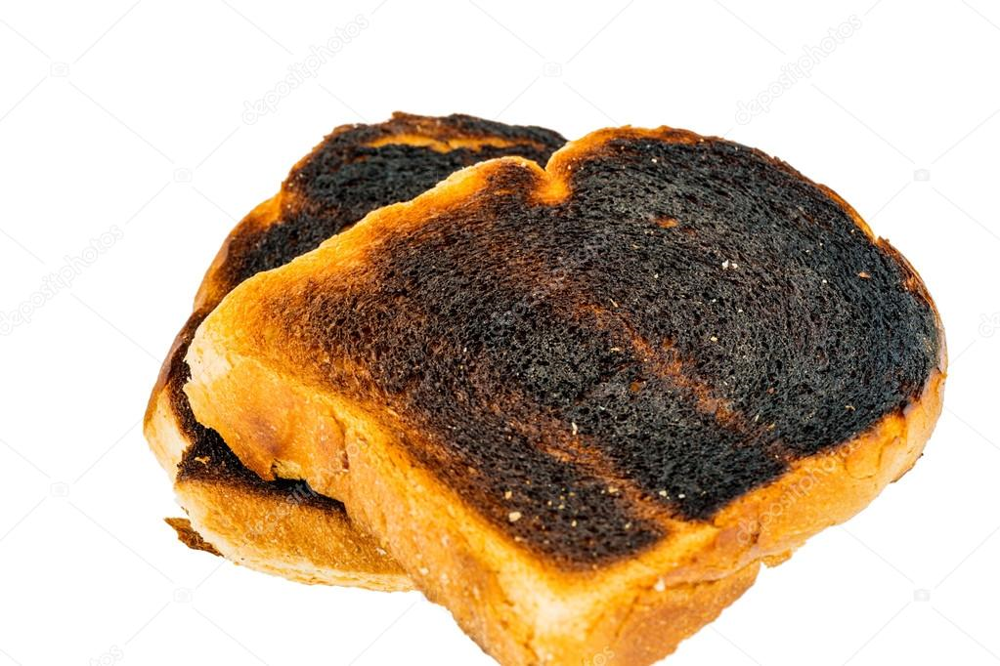
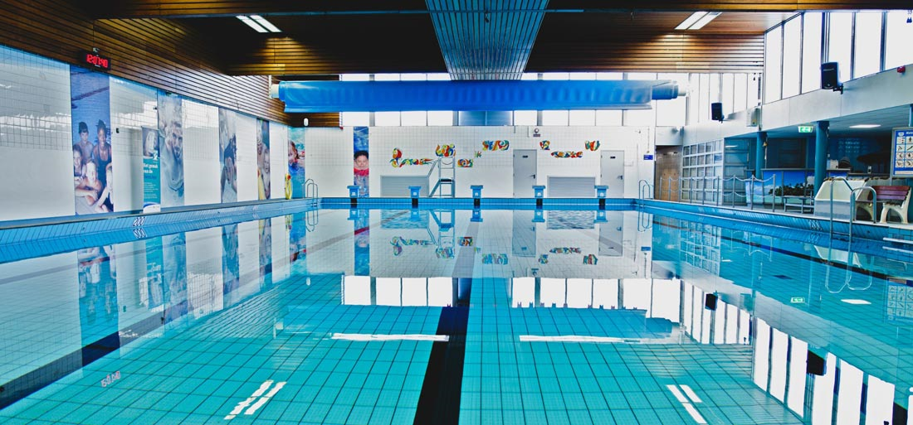
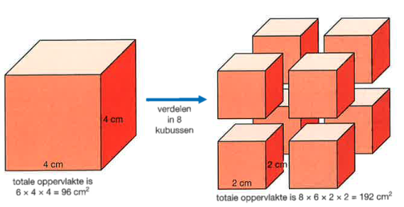
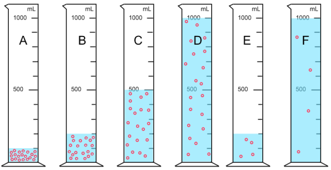

Introductie
Reactievergelijkingen
keyboard_arrow_up
keyboard_arrow_down
Chemische reactie
keyboard_arrow_up
keyboard_arrow_down
In de scheikunde kijken we naar chemische reacties. We spreken van een chemische reactie wanneer de beginstof verdwijnt en er een reactieproduct ontstaat. Beginstof(fen) zijn de moleculen die je aan het begin van de reactie hebt. Het reactieproduct is het molecuul dat is gevormd na de reactie.
Een chemische reactie kan je op verschillende manieren weergeven.
Dit kun je doen door een reactieschema te gebruiken of een reactievergelijking. Bij een reactieschema schrijf je de naam van de moleculen voluit.
Bij een reactievergelijking gebruik je de molecuulformule (de symbolen van de elementen).
Voorbeeld reactieschema:
Water → waterstof + zuurstof
Voorbeeld reactievergelijking:
2 H2O(l) → 2 H2(g) + O2(g)
Wet van behoud van massa
keyboard_arrow_up
keyboard_arrow_down
In 1793 was de Franse scheikundige Antione Lavoisier bezig met allerlei stoffen te verbranden. Hij bepaalde voor en na de reactie de massa’s van de stoffen. Lavoisier kwam op het idee om de gassen mee te wegen want die hebben ook een massa. Hierin zag hij dat de totale massa voor en na de reactie gelijk was. Zo kwam hij op de Wet van behoud van massa.
Als je de Wet van behoud van massa zie je ook terug in reactievergelijkingen, dit noemen we ook wel atoom-behoud. Atoom-behoud wil niks anders zeggen dat het totaal aantal atomen (van een soort) voor de reactie gelijk moet zijn aan het totaal aantal atomen (van hetzelfde soort) na de reactie.
Voor het opstellen van de kloppende reactievergelijking volg je een stappenplan.
Stap 1: Stel eerst het reactieschema op.
Stap 2: Vervang nu elke stofnaam door de bijbehorende formule.
Stap 3: Stel de kloppende reactievergelijking op. Dit door een coëfficiënt voor het molecuul te zetten.
Het coëfficiënt geeft aan hoe vaak het molecuul aanwezig is in de reactie.
Wanneer er geen coëfficiënt wordt aangegeven is het molecuul één keer aanwezig.
Stap 4: Controleer of de reactievergelijking klopt. Controleer per atoomsoort hoeveel je er voor en na de reactie hebt.
Onder extreme omstandigheden is het mogelijk om stikstof te verbranden.
Hierbij ontstaat stikstofmono-oxide. Stel de kloppende reactievergelijking op.
Stap 1: Stikstof + zuurstof → Stikstofmono-oxide.
Stap 2: Stap 2: N2(g) + O2(g) → NO(g).
Stap 3: De aantallen atomen kloppen nog niet. Voor de pijl zijn er twee stikstof en twee zuurstofatomen.
Na de pijl is er één zuurstof en één stikstofatoom. Dit los je op door een 2 voor het stikstofmono-oxide molecuul te zetten.
Dit geeft aan dat er twee stikstofmono-oxide moleculen aanwezig zijn.
N2(g) + O2(g) → 2 NO(g)
Stap 4: Nu is er voor en na de reactie twee stikstof en twee zuurstof atomen aanwezig.
Endotherm en Exotherm
keyboard_arrow_up
keyboard_arrow_down
In de scheikunde onderscheiden we reacties door te kijken of je constant energie aan de reactie moet toevoegen (endotherm) of dat er energie vrijkomt (exotherm). Bij een endotherme reactie moet je energie blijven toevoegen anders stopt de reactie. Voorbeelden van endotherme reacties zijn ontledingsreacties, ontledingsreacties zijn bijna altijd endotherm. Je hebt drie soorten ontledingsreacties:
Thermolyse: Bij thermolyse ben je aan het ontleden door verhitting. Een voorbeeld is wanneer voedsel te sterk verhit wordt. Door de hitte worden koolstof bevattende stoffen in bijvoorbeeld brood ontleed en wordt er een vaste zwarte stof (koolstof) zichtbaar.
Fotolyse: Bij fotolyse ben je aan het ontleden door licht. Een voorbeeld is bij planten die door middel van fotolyse koolstofdioxide en water omzetten in glucose en zuurstof.

Elektrolyse: Bij elektrolyse ben je aan het ontleden door middel van elektrische stroom. Een voorbeeld is bij elektrolyse-installatie van een zwembad. De elektrolyse-installatie van het zwembad produceert chloor door opgelost natriumchloride (keukenzout) te elektrolyseren.
Als je gaat kijken naar exotherme reacties krijg je al gauw te maken met verbrandingsreacties. Bij verbrandingsreacties wordt er een brandstof samen met zuurstof door middel van een beetje energie (activeringsenergie) op gang gebracht. Wanneer de reactie eenmaal op gang gekomen is gaat deze vanzelf verder. In het algemeen geldt dat bij een verbranding van een verbinding de oxiden ontstaan van de atoomsoorten die in verbinding staan (zie de tabel hieronder).
| Atoomsoort in de brandstof | Formule verbrandingsproduct | Naam verbrandingsproduct |
|---|---|---|
| C | CO2 | Koolstofdioxide |
| H | CO2 | Koolstofdioxide |
| C | H2O | Water |
| Mg | MgO | Magnesiumoxide |
Reactiesnelheid
keyboard_arrow_up
keyboard_arrow_down
De snelheid waarmee stoffen met elkaar reageren, noem je de reactiesnelheid. De reactiesnelheid wordt door vijf verschillende factoren bepaald. Dit zijn de volgende factoren:
Soort stof: Het ligt voor de hand dat de soort stof een rol speelt. Elke stof heeft andere stofeigenschappen. Zo roest ijzer sneller dan staal en gaat de verbranding van benzine sneller dan die van kaarsvet.
Verdelingsgraad: Wanneer de stof een grotere oppervlakte heeft zijn er meer punten om te reageren dan een kleiner oppervlak. us hoe fijner de stof hoe beter de stof reageert.
Concentratie: De concentratie of sterkte van een oplossing geeft aan hoeveel stof er is opgelost per hoeveelheid oplossing (of oplosmiddel). In de afbeelding hieronder zie je steeds een concentratie stof die per maatcilinder afneemt.
Temperatuur: De temperatuur geeft energie aan de reactie. Hoe hoger de temperatuur hoe meer energie in de reactie gestoken wordt.
Katalysator: Een katalysator is een hulpstof die de reactie laat plaatsvinden wanneer dit niet gebeurd of de katalysator laat de reactie sneller verlopen. Een voordeel van een katalysator is dat die helpt de reactie te versnellen maar zelf niet verbruikt wordt. Een voorbeeld van een katalysator zijn enzymen.
Botsende deeltjesmodel
keyboard_arrow_up
keyboard_arrow_down
Je kunt verschillen in reactiesnelheid verklaren door middel van het botsende-deeltjesmodel. Hierbij kijk je naar de moleculen en atomen tijdens de reactie. De moleculen/atomen worden beschreven als rondde deeltjes.
Tijdens een reactie treedt een hergroepering van atomen op. Dikwijls gaat aan zo’n hergroepering een botsing van twee of meer moleculen van de diverse uitgangsstoffen vooraf. Lang niet alle botsingen tussen moleculen hebben echter een reactie tot gevolg. Dit is slechts bij een gedeelte van het totale aantal botsingen het geval. Dan spreekt men van effectieve botsingen. Hoe groter het aantal botsingen per seconde, des te groter is ook het aantal effectieve botsingen en des te sneller verloopt dan de reactie. Hieronder staat per factor beschreven hoe de snelheid veranderd met betrekking tot het botsende deeltjesmodel.
Verdelingsgraad: Hoe groter de verdelingsgraad, hoe fijner de vaste stof verdeeld is, hoe groter het contactoppervlak. Hierdoor neemt het aantal botsingen toe dat er per seconden aan het oppervlak heeft kunnen plaatsvinden.
Concentratie: Een vergroting van de concentratie van de reagerende deeltjes zal het aantal botsingen per seconde toenemen. Hoe meer deeltjes zich in een bepaalde volume bevinden, des te groter de kans is dat deze deeltjes met elkaar botsen.
Temperatuur: Bij temperatuurverhoging gaan de deeltjes sneller bewegen. Doordat de deeltjes sneller bewegen is de kans dat ze elkaar ontmoeten groter. Dus het aantal botsingen per seconde neemt toe.